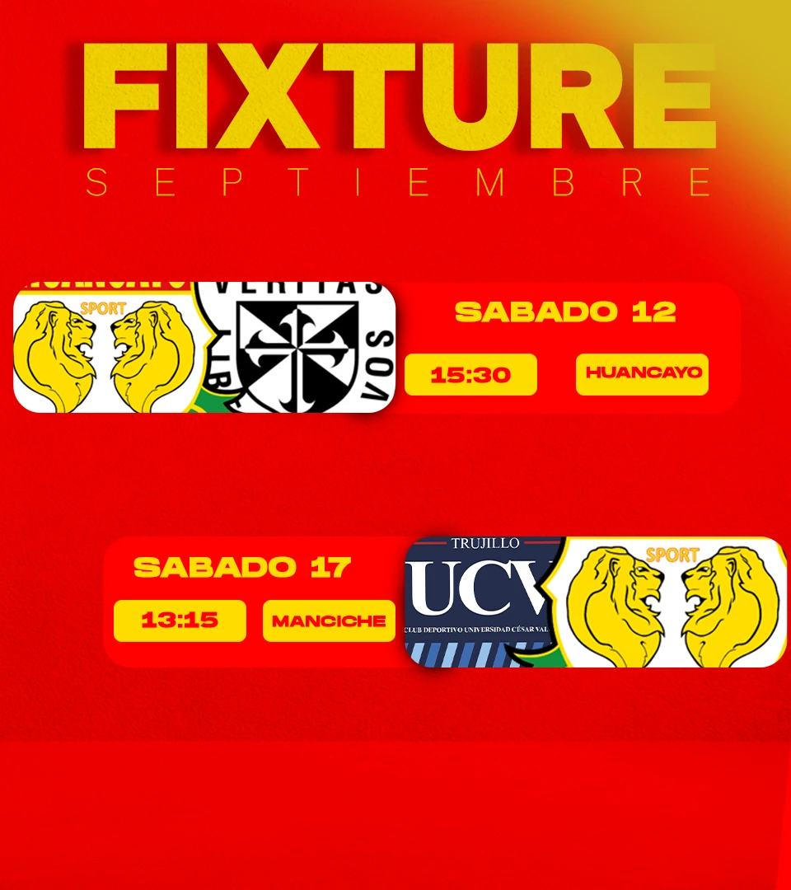
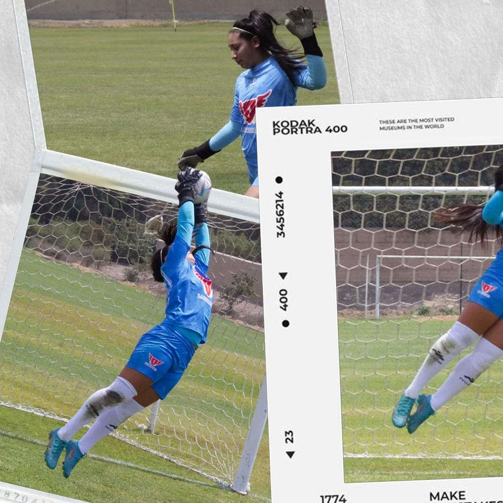
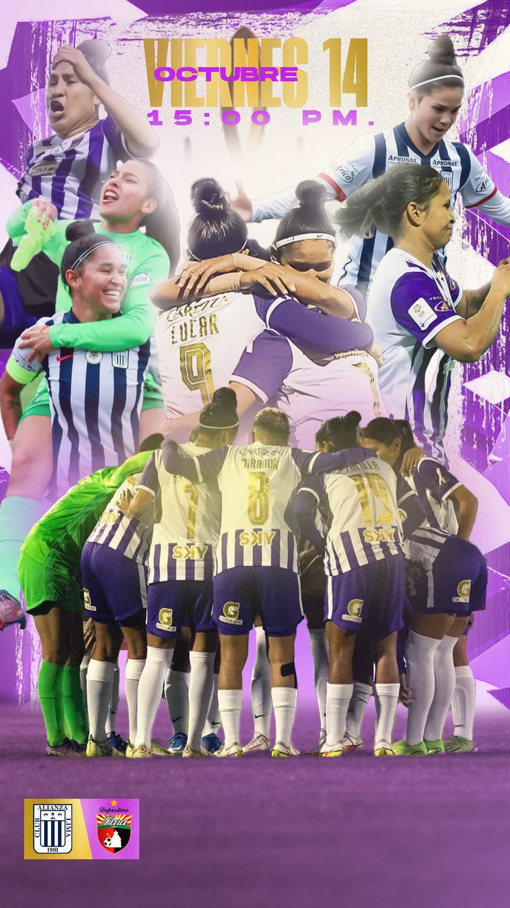
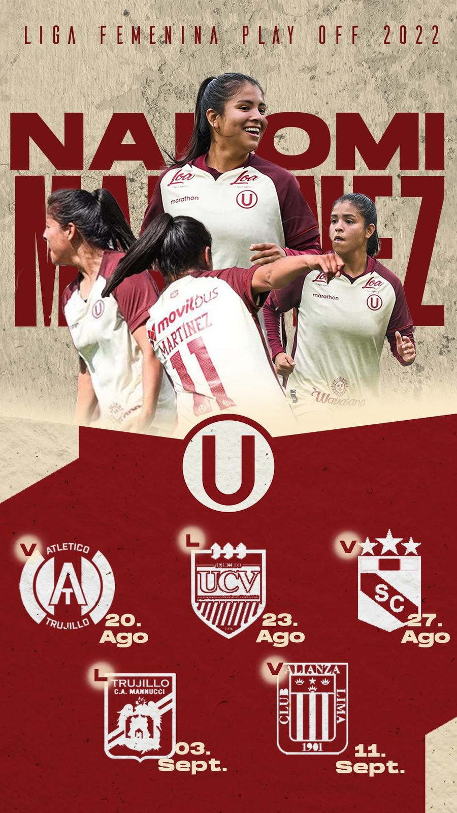
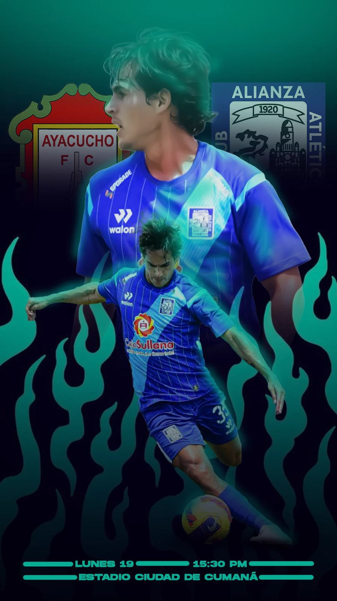
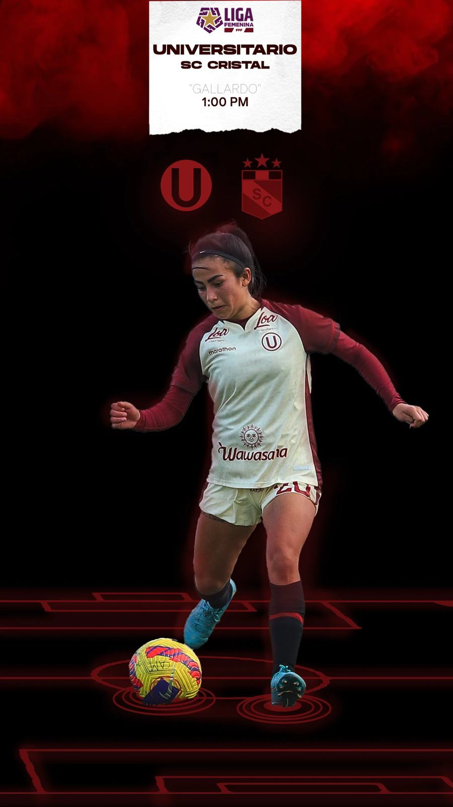
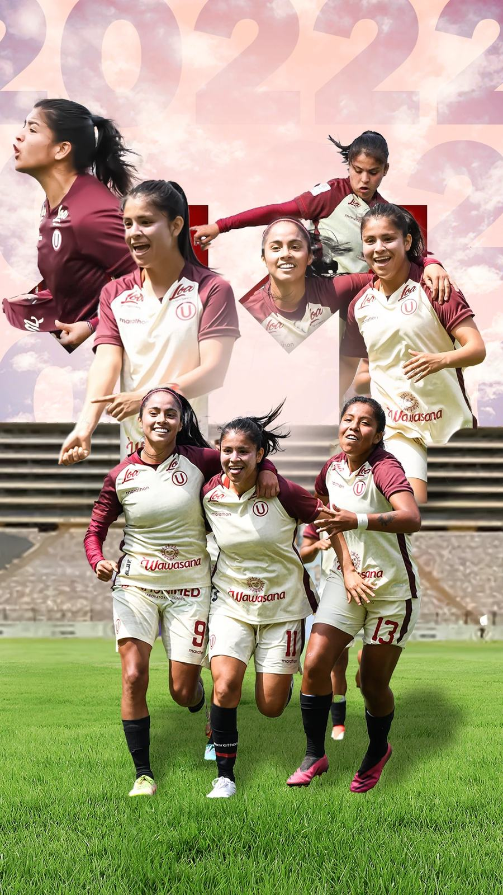

Trabajo / Diseño deportivo / 06
Matchday's 2022–23
Afiches de partido, fixtures y piezas de jugador para el fútbol peruano en la temporada 2022–23.

Universitario, Alianza Lima, Sport Huancayo, Sporting Cristal, Atlético Grau y la selección femenina de Perú.
Cada afiche busca una idea distinta: un podio de F1, un collage de Polaroids, fuego, cielos rosados o una diagonal roja y blanca.
 960 × 1080
960 × 1080
960 × 10801080 × 1080 900 × 1600
900 × 1600 1080 × 1080
1080 × 1080 1080 × 1080
1080 × 1080 900 × 1600
900 × 1600
1080 × 1080 1080 × 1080
1080 × 1080
900 × 1600 900 × 1600
900 × 1600
900 × 1600 1080 × 1350
1080 × 1350
900 × 1600 900 × 1600
900 × 1600 900 × 1600
900 × 1600
900 × 1600 900 × 1600
900 × 1600
900 × 1600 900 × 1600
900 × 1600 900 × 1600
900 × 1600 900 × 1600
900 × 1600